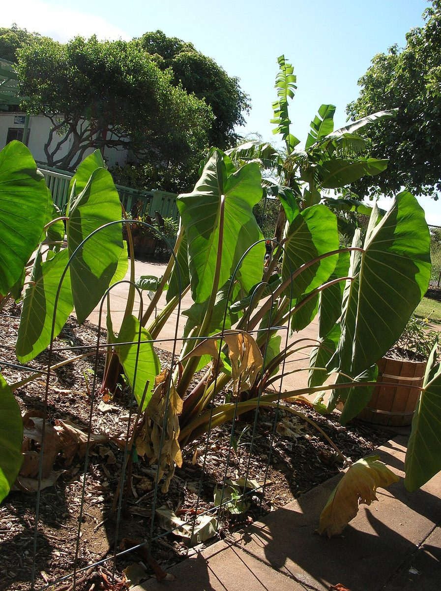
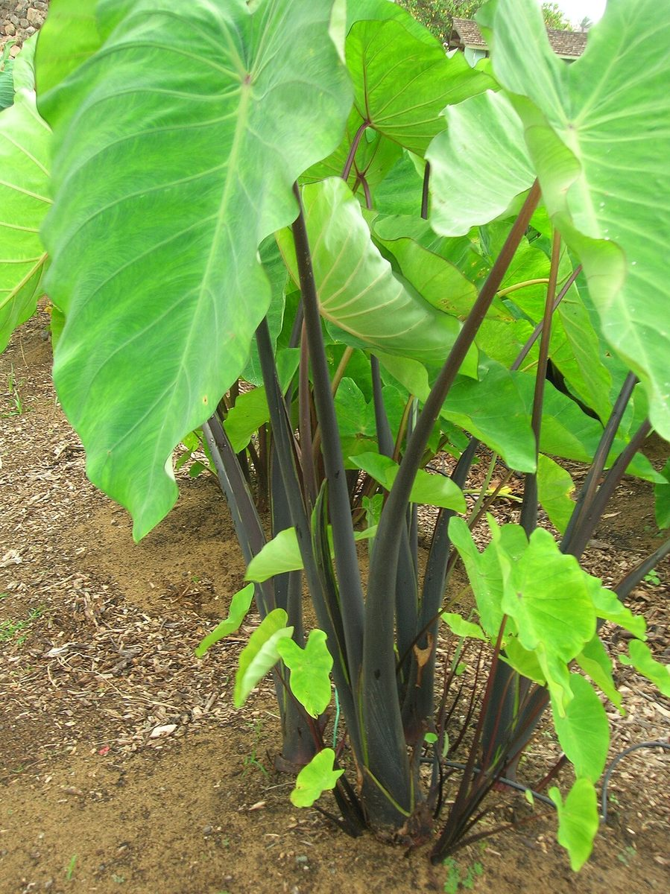

Colocasia esculenta
kalo · taro


Quick facts
| Family | Araceae |
|---|---|
| Scientific name | Colocasia esculenta |
| Hawaiian name(s) | kalo |
| English name(s) | taro |
| Status | Polynesian introduction (canoe plant) |
| Conservation | — |
| Coastal zones | Valley mouth Riparian |
| Occurrence | Persistent remnants of terraced loʻi (wet cultivation terraces) at Kalalau in particular, and historically extensive in every wet Nā Pali valley — Honopū, Nuʻalolo Kai, Miloliʻi, Awaʻawapuhi. Naturalized populations persist in some stream margins and back-loʻi seepages. Restoration of Kalalau's loʻi is an ongoing cultural stewardship effort, not a historical remnant only. |
How to identify
- Growth form
- Large stemless herb rising from an underground corm; leaves emerge on long petioles directly from the corm rather than from an above- ground stem. Forms dense stands in wet ground.
- Size
- 0.5–1.5 m tall (leaf-tip height); leaf blade 25–75 cm across.
- Leaves
- Large heart-shaped-to-arrow-shaped blade 25–75 × 15–50 cm, held on a long fleshy petiole 40–150 cm. **Petiole attaches to the underside of the blade, not at the leaf margin — this is called peltate attachment, and it is the single most diagnostic feature.** Blade is typically held horizontally rather than upright. Surface is strongly water-repellent: water droplets bead up and roll off, another diagnostic field mark.
- Flowers
- Uncommonly produced in Hawaiian populations. When present, a typical aroid inflorescence — a yellow spadix wrapped in a pale spathe, partially obscured among the leaf bases.
- Fruit / seed
- Small berry-like fruit on the spadix; almost never seen in Hawaiian populations, which are propagated vegetatively from corm sections (huli).
- Bark / stem
- No true above-ground stem. The underground structure is a starchy corm, sometimes with small cormlets around it.
- Where it sits on the coast
- Wet cultivation terraces (loʻi) at Kalalau; wet stream margins and seepage zones at other Nā Pali valley mouths. Never on dry cliffs or open beach.
Clinchers (features that lock the ID)
- Peltate leaf attachment — petiole meets the underside of the blade, not the margin.
- Water-repellent leaf surface — droplets bead and roll off cleanly.
- Leaf blade held horizontally, not upright.
- Wet-ground habitat (loʻi terrace or streamside seep).
Look-alikes
- ʻape (*Alocasia macrorrhizos*, giant taro) — ʻape is much larger overall, leaves often held upright pointing toward the sky (rather than horizontally). ʻape's petiole meets the leaf blade at a notched cordate margin, not on the underside, so it is not truly peltate. **ʻape is toxic if eaten raw and is not the same plant as kalo** — a very important distinction if anyone is trying to identify by leaf alone.
- Elephant ear / *Xanthosoma sagittifolium* (introduced ornamentals and food plants) — *Xanthosoma* has a cordate leaf attachment (petiole at the margin notch) rather than a truly peltate attachment. If the petiole connects at the edge of the leaf blade, it is not kalo.
- Other cultivated *Colocasia* and Araceae ornamentals — Modern ornamental aroids may share the peltate attachment; on the Kauaʻi unpopulated coast, however, encountering any peltate-leaved aroid in a wet valley-bottom setting is functionally always kalo.
Ecology
Native to Southeast Asia; carried across the Pacific by Polynesian voyagers as one of the foundational canoe plants. In Hawaiʻi, wet cultivation in engineered terraces (loʻi) worked together with dry cultivation of upland cultivars to feed the population of every major valley. The wet-loʻi complex at Nā Pali valley mouths was fed by valley streams and required active water management and land tending; the archaeological record at Kalalau still shows terrace walls where the loʻi complex stood. [1], [2], [39], [40], [41], [42], [43]
Cultural significance
Kalo is not, in a Hawaiian frame, simply a "food crop". In Hawaiian cosmology recorded in the Kumulipo and in Handy & Handy 1972 [39], kalo is genealogically kin to the Hawaiian people. Hāloa, the stillborn first child of Wākea (Sky Father) and Hoʻohōkūkalani, is buried and grows into the first kalo plant; the second child (also named Hāloa) is the ancestor of the Hawaiian people. Kalo is therefore the elder sibling of humankind, and Hawaiian relationships with kalo carry the weight of that genealogy. Hawaiian cultivation traditions describe more than 300 named pre- contact varieties of kalo, each with specific colour, growth habit, culinary use, and often ceremonial or medicinal association. The wet-terrace (loʻi) system that supported this diversity is a technology inseparable from land-and-water stewardship: the wai (water) flows from the mountain streams through the loʻi and back to the ocean, and its management is part of the same practice as growing the plant. Restoration of loʻi at Kalalau and elsewhere on Kauaʻi is an ongoing cultural stewardship effort carried by Hawaiian practitioners and community organisations. Visitors to the unpopulated coast who recognise a loʻi terrace should understand they are looking at a working cultural site, not a historical artifact. This guide names the practices and the tradition; the transmission of kalo cultivation, cultivar knowledge, preparation, and ceremonial context belongs to Hawaiian cultural practitioners and to the contemporary keepers of Kauaʻi's loʻi. This guide provides identification only. No harvest, no preparation technique, no poi-making instruction is offered here. That knowledge lives in Hawaiian hands.